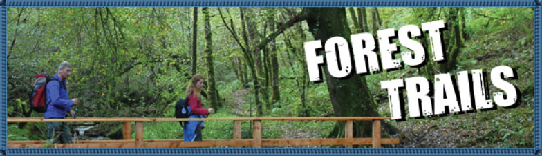

HAPPY HIKES - IRELAND

My Trails

-
“To walk in nature is to witness a thousand miracles. - Mary Davis”
FIND A TRAIL

1. Donegal
2. Northern Ireland
3. Monaghan
4. Louth
5. Sligo
6. Leitrim
7. Cavan
Meath
8. Dublin
9. Mayo
10. Roscommon
11. Longford
12. Westmeath
13. Kildare

14. Galway
15. Offaly
16. Laois
17. Wicklow
18. Clare
19. Tippearary
20. Kilkenny
21. Carlow
22. Wexford
23. Limerick
24. Kerry

25. Cork
26. Waterford
To view the trails click on any county in the map of Ireland or search for trails using the drop down menu options below.
>
© Copyright 2019 |


 | Ashley Nic an Airchinnigh
| Ashley Nic an Airchinnigh
Back to top
| Ashley Nic an Airchinnigh